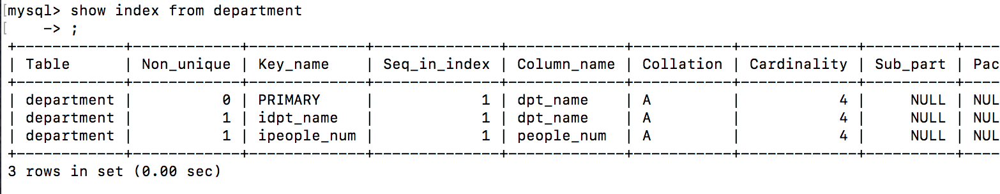

Mysql学习感悟-3
其实几天前就打算继续写点什么，但是几天前就被“索引”这个概念给绊住了。
一开始看的解释就很官方…它的作用相当于书的目录…当表中有大量记录时，若要对表进行查询，没有索引的情况是全表搜索，将所有记录一一取出，和查询条件进行一一对比…
现在看，作者是高手，已经尽量用形象比较的方式解释概念了，可是直到上一时刻我一直不明白。在我的想象中(有一双滑板鞋…)查找不就是按照给的条件的关键词来对比的吗，这个索引没啥存在感啊，那看来我理解不对，那么索引到底是什么。
于是继续搜不同教程看解释。其中有个人举了这个例子“假如我们创建了一个 mytable表，随机向里面插入了10000条记录，其中有一条：5555, admin。在查找username=”admin”的记录 SELECT * FROM mytable WHERE username=’admin’;时，如果在username上已经建立了索引，MySQL无须任何扫描，即准确可找到该记录。相反，MySQL会扫描所有记录，即要查询10000条记录。”这里的最后一句话彻底把我搞蒙了：查询10000条记录，那么说明无索引的查询是按一条条查的。而有了索引就算是只查索引所在的那列，还是要一条条地单独查那一列。两种都是一条条查，次数相同，这怎么说明索引能快速搜索呢？
另外，当我暂时不管概念创建索引后，用select*from table看索引到底什么样时，我发现这个东西没形啊…因为我以为索引应该像目录一样，多加一列而已吧？而用show index后出现的东西看不懂，不知道那么多列代表的是什么…
那就再建一个，对比一下，好像有点看出来index这个结果是什么意思了

用其他表格建索引再对比一下
我很幸运地找到了一篇从算法上解释索引的文章，大概明白了这个‘晦涩’的表：Non_unique不懂，Key_name就是键(索引)，PRIMARY是最重要的主键，Seq_in_index是键的优先级，Column_name是表的列名，Collation不懂，Cardinality是不重复的索引值种类，Index_type一般用Btree算法，还有HASH算法(不过对我也无所谓)其他也没什么太重要的了。
到这里又问了一下我朋友，答曰：“你需要查找姓名叫张三的，就会对姓名这个字段一行一行的进行比较，所以叫全表查询。如果有索引，就相当于有了字典的目录一样，可以很快找到你要查询的数据所在的小范围并且找到它，不需要一行一行比较。”我朋友解释也是很简练。
我又琢磨：你说像翻字典，就是说全书粗略地翻一下，在看到大概字母顺序的时候停下来，然后再细翻查找。这里的字母顺序就是主键值，细翻就是正常‘全表查询’咯。
其中平衡二叉树(朋友给我科普的)特别形象：先通过主键(第一批大节点)确定要查询的是在哪个大方向，再通过组合索引?(下一批节点)继续缩小方向，以此下去。和全表查询比较，确实不用每条都查，虽然到某一阶段后还是要挨个查，但是省了很多很多条肯定没关系的查询。
以上！晚安